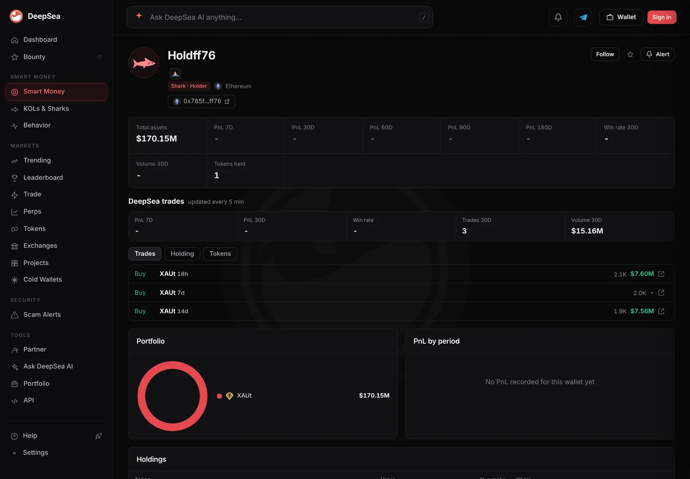

One shark bought $7.6 million of Tether Gold, its third buy in two weeks. It holds $170 million
Two shark wallets bought $8.34 million of XAUt in a day and sold $0.53 million. One of them did 91% of the buying and now holds 46,919 tokens, its only sizable asset.
Key points
- Shark wallets bought $8,342,383 of Tether Gold (XAUt) and sold $531,231 in DeepSea's 24-hour table built at 12:34 a.m. ET on November 27: two wallets, three trades.
- One wallet, ending in ff76, bought $7,595,466 in one trade, about 2,100 XAUt. It bought about 2,000 seven days ago and 1,900 fourteen days ago.
- Etherscan shows the wallet holds 46,919 XAUt, worth about $170.9 million, with no name tag.
 What DeepSea's data shows
What DeepSea's data shows
DeepSea's 24-hour flow table, built at 12:34 a.m. ET on November 27, has an XAUt line on Ethereum: 2 shark wallets, $8,342,383 bought and $531,231 sold, in 3 trades. That is about $7.81 million net bought.
Its wallet list shows one shark, ending in ff76, buying $7,595,466 in one trade and selling nothing. DeepSea's wallet page labels it Holdff76 and confirms the trade was XAUt: a 2.1K buy, 18 hours before our 12:46 a.m. ET check. The page lists two earlier XAUt buys: 2.0K seven days ago, with no dollar value shown, and 1.9K fourteen days ago, for $7.56 million. XAUt is the only token it holds, at $170.15 million.

Data: DeepSea (desea.io), checked November 27, 2026, 12:34 a.m. ET.
One wallet did most of the buying
Tether Gold, or XAUt, is a token from Tether meant to track the price of gold. We checked the buyer with data from DeepSea, Etherscan and CoinGecko.
The ff76 wallet bought about 91% of the day's shark XAUt buying. Since it sold nothing, all $531,231 of selling came from the other wallet, which also bought about $746,917.
On Etherscan, the wallet holds 46,919 XAUt, worth $170,855,069 at 12:45 a.m. ET. That is about 5.7% of the 827,418 XAUt Etherscan lists as the token's total supply on Ethereum, spread over 63,911 holders. The address page shows no name tag and only $85 of ether for fees. Etherscan says the wallet was first funded about five years ago by an address it labels Bitfinex 3. That does not tell us who owns it.
XAUt buys by wallet ff76, DeepSea wallet page
thousand XAUt
Source: DeepSea wallet page, read November 27, 2026, 12:46 a.m. ET.
Gold tokens this week
XAUt traded at $3,643.13 on CoinGecko at 12:45 a.m. ET on November 27, up 1.7% in 24 hours, with a market value of $2.95 billion and $111.7 million traded. PAX Gold (PAXG), the other big gold token, was $3,639.56, up 1.7%.
Sharks went the other way on PAXG this week: they sold $7.14 million in DeepSea's November 26 table, a day after two sharks bought $1.41 million. For how Tether backs XAUt, see our story on the KPMG count of Tether Gold's bars.

LC Insight analysis
This section is our reading of the facts above, not a statement of fact.
- We think the steady pattern matters more than the size: three buys of about 2,000 XAUt, a week apart, look like a regular plan, not a reaction to one day's price.
- One wallet holding about 5.7% of XAUt on Ethereum is a big position. If it ever moves the coins, that will show up fast in tables like DeepSea's.
- The buying came as gold tokens rose about 1.7% in a day. The data does not show the wallet's reason.
What's next
- Whether wallet ff76 buys again around December 3, a week after this purchase.
- Whether its 46,919 XAUt balance on Etherscan grows or moves.
- Whether shark selling in PAXG continues while XAUt draws buyers.
Disclaimer. This article is based on public information and the sources listed below as of the update time shown. It is for information only and is not investment, legal or tax advice. Figures may change as companies and authorities publish new data.
Sources
- DeepSea, 24-hour shark flow table (built November 27, 2026, 12:34 a.m. ET)
- DeepSea, wallet page Holdff76 (read November 27, 2026, 12:46 a.m. ET)
- Etherscan, XAUt balance of wallet ff76 and token data (read November 27, 2026, 12:45 a.m. ET)
- Etherscan, wallet ff76 address page (read November 27, 2026, 12:45 a.m. ET)
- CoinGecko, Tether Gold (XAUt) price and volume (read November 27, 2026, 12:45 a.m. ET)
- CoinGecko, PAX Gold (PAXG) price (read November 27, 2026, 12:45 a.m. ET)